隨意地記錄一些NGIN上的一些思考
How to create a temporary NGIN network
This is the tutorial material for dev building a temporary NGIN network through ngcore’s regression testnet flag.
Ready
Before we start, we should create two different folder to keep the chain data.
I will suggest using --in-mem flag which can reach the same goal.
If you dislike that, for example, you can create ./dataFolder1 and dataFolder2.
On the following ngcore command, you should add --db-folder dataFolder1 for the first node
and --db-folder dataFolder2 for the second one
Node #0
let we start a regression testnet ngcore node with --reg-testnet only first.
1 | ./ngcore --reg-testnet --db-folder ./env/1 --p2p-key ./env/1.p2pkey |
The node will serve its p2p service on 52520 and rpc service on 52521.
Write down this node’s p2p address like 16Uiu2HAmL6ojX5jgxJsoo55suHxM8HocaLuMx4uLSfHpER9rTYtJ , which will be used in the connecting step.
Node #1
Now we need to start another one on different port
1 | ./ngcore --reg-testnet --db-folder ./env/2 --p2p-key ./env/2.p2pkey --p2p-port 62620 --rpc-port 62621 |
The node will serve its p2p service on 62620 and rpc service on 62621.
Connect
To build a small network, we should use rpc command to manually connect them.
1 | curl -d '{"id": 1, "method": "addPeer", "params": {"peerMultiAddr": "/ip4/127.0.0.1/tcp/52520/p2p/16Uiu2HAmL6ojX5jgxJsoo55suHxM8HocaLuMx4uLSfHpER9rTYtJ"} }' http://127.0.0.1:62621 |
16Uiu2HAmL6ojX5jgxJsoo55suHxM8HocaLuMx4uLSfHpER9rTYtJ is the p2p address of node #0 in my machine. You should replace it with yours.
Startup
Finally, you should let one of your node start mining, to import blocks into your chain.
1 | curl -d '{"id": 1, "method": "switchMining", "params": {"mode": "on"} }' http://127.0.0.1:62621 |
Untitled
知识评估和进展分析与设计的统一框架 A Unified Framework for Knowledge Assessment and Progression Analysis and Design
作者 Shuhan Wang, Fang He & Erik Andersen
论文翻译，侵删
摘要
设计引人入胜的学习内容固然重要，但也很困难，并且通常涉及许多手动规范。 我们提出了一个统一的框架，该框架利用自动问题分解和部分排序图的构建来简化多个工作流：知识评估以及进行性分析和设计。 我们通过在线日语评估工具对847名参与者进行了研究，结果表明我们的框架可以有效地衡量学生的能力并预测学生在特定问题上的表现。 我们还提供了对课程分析的结果，结果表明两种不同教科书的进度令人惊讶地相似，并且我们的框架可以导致发现专家进行设计的一般原理。 最后，我们演示了自动进度生成以及所需的排序和步调，允许进行进度定制以及将从一个课程中提取的参数映射到另一个课程
ACM Classification Keywords
H.5.0 Information Interfaces and Presentation: General
Author Keywords
education; automatic problem decomposition; knowledgeassessment; progression analysis and design
简介
教育中的一个关键挑战是保持学生的参与度，而首要考虑的是向特定学生展示最佳知识的顺序。 排序是一个挑战：首先应该引入哪些知识？ 另一个速度是：进步会变得越来越困难。尽管有教育和心理学等方面的指导原则[15，55，59]可以帮助设计进步，但缺乏务实和自动的方法来弥合教育理论与实践之间的差距， 尤其是整个课程的规模。 设计和优化进度的困难也限制了课程适应每个学生需求的能力
在HCI中，此问题与教育软件[7、14]，视频游戏[11、22、33、37、45]和软件可学习性[25、31]的设计有关。目前，我们主要是手工设计进度，这很昂贵，并且限制了我们寻找最佳进度的实验能力。最近，在自动进度设计中已有一些工作[6，11]。尽管这项工作能够自动组织内容，但仅解决了程序性主题和视频游戏级设计。我们仍然缺乏一个通用的框架来表征能够处理一些非过程性主题（如语言学习）的教育进程。此外，我们需要一种形式上的方法来使用相同的框架来评估学生的知识，以便我们可以针对该学生量身定制学习进度和进度。理想情况下，我们将能够在不费吹灰之力的情况下针对广泛的教育领域建立适应性的进步。
在本文中，我们提出了一个框架，该框架允许针对非过程性任务进行自动问题分解和部分排序图构造。该框架促进了多个工作流程。它建立在项目反应理论[53]，知识空间理论[28]和知识追踪[14]的基础之上，以创建学生知识和问题难度的多维度量，从而可以快速评估和预测绩效。它还定义了起搏和其他进度参数的参数空间，并提供了一种方法来表征和比较进度以及设计符合所需参数的新进度。
我们对框架进行了多次评估。首先，我们提出了对自动问题分解和偏序图构建的理论贡献，以帮助外语学习语法，这是一个重要的非程序性主题。然后，我们讨论了一个有847名参与者的用户对日语评估工具的评估，这表明我们的自动评估算法可以根据项目响应理论准确地进行能力评估和绩效预测。我们还提供了自动分析语言学习进度的结果，显示出两本用于学习日语的教科书令人惊讶地具有相似的节奏和其他进阶特征，并且两种在线语言学习工具具有非常不同的进阶设计策略。最后，我们证明了我们的框架可以自动生成具有所需特征的进度，例如学习进度以及学习和复习的比例。这使得从进度分析中获得的见解可以直接应用于进度设计和个人进度剪裁
相关工作
智能辅导系统
有成功的适应性学习系统，例如认知母语导师[7]。其中一些工作专门针对语言学习[63，65]。认知导师通过跟踪认知模型中个体生产规则的表现来利用知识边缘跟踪[14]来跟踪知识的获取并提供量身定制的指导[14，39]。该模型已通过多种方式扩展，包括估算学生了解技能的初始概率[49]，评估帮助功能对获得概率的影响[10]以及与项目难度模型集成[ 50]。另一种方法是逻辑回归，这对于涉及多种技能的任务特别有效[64]。但是，这些方法通常不考虑起搏。取而代之的是，他们一直给问题赋予特定的生产规则，直到“隐马尔可夫模型”获得了95％的置信度，即学生已经学会了该规则，然后继续研究下一个概念。此外，认知导师很难构建。据估计，设计一个小时的内容需要多达200-300个小时的专家设计工作[3]，尽管更新的设计技术已将其减少到50-100个小时[4]。我们的工作旨在开发自动分析和优化教育进度的途径。
教育与心理学
许多理论都支持适度的难度对于交往很重要[1，8，16，20，34，47]。当国际象棋选手的排名略高于他们时[1]，最不愉快的情况。对非竞技游戏的进展分析也支持中等难度的使用[44]。 Csikszentmihalyi的流量理论规定，当挑战既不太高又不太低时，人们最会参与其中[16]。 Vygotsky的近端发展区[59]规定，学习者可以在一定指导下获得一系列概念，而教育内容应继续以此为目标。Reigeluth和Stein的阐述理论[55]认为，简单概念的首先应教授一项任务，然后逐步讲解原始任务，然后逐步进行更复杂的任务。 Li等。通过使用机器学习代理检查问题排序来研究问题排序，发现交错的问题排序比阻塞的排序导致更快的学习[43]。当前，我们缺乏实用的，自动的方法来定量描述这些原理并将其应用于实际的进步，而我们的工作旨在做到这一点。
语言教育
Krashen [42]提出要以可预测的顺序（自然顺序假设）学习概念，并且当学习者接触的语言超出了他或她所能理解的范围（输入假设）时，就会发生语言习得。 语言学习文献中有广泛的证据表明，学习者在使用语法语素[30]，动词否定[13、62]，问题[52]，所有格确定语[61、66]，相对 条款[29、38]和时间参考[48]。 我们的工作旨在创建一个平台，以评估这些理论并确定它们是否能够激发扎根的学习进展，从而促进学习和参与度的提高
基于跟踪的部分排序
Andersen提出了一种通过对要学习的过程进行静态分析来自动探索任务进度空间的技术[6]。该技术通过分析在该任务上运行过程所获得的执行跟踪来表征任务。通过将每个任务描述为基本操作的序列，可以指定排序问题难度的部分排序。实验证明，这种部分排序可以与用户在教育代数游戏中对困难的感知相匹配[6]。基于轨迹的框架已应用于数学[6]，视频游戏级设计[11]和教学泰语[5]。这项工作还使用了测试输入生成工具，例如Pex [58]和FShell [36]，它们系统地创建具有高代码覆盖率的测试用例套件，以对所有可能的跟踪（在一定范围内）产生问题。但是，此框架不能应用于非过程性主题。例如，尚不清楚如何分析人类如何理解自然语言的执行轨迹。我们在此工作的基础上提出了问题分解和组织的通用框架，该框架可以应用于非过程教育领域，例如语言学习。在此框架内，我们可以衡量学生的能力并预测学生在新问题上的表现
知识评估：IRT和KST
响应理论（IRT）为知识评估提供了一个框架[26，27，54]。 IRT认为，对某个项目做出正确反应的概率是项目参数和个人能力的函数[32]。勋爵等。提出了3PL模型[46]，该模型考虑了三个项目参数：项目难度，项目歧视和猜测概率。 Rasch [53]提出了一个更简单的模型，该模型规定正确答案的可能性仅由学生的能力和项目难度之间的差异来确定。然而，IRT模型的一个共同缺点是，它们使用一维数值分数来衡量学生的能力和项目难度[28]，这并不反映出学生可能会根据自己掌握的知识而发现各种困难的子集。衡量学生能力和捕获此类差异的问题难度之间差异的方法。我们使用从在线知识评估平台收集的用户数据验证此模型。
知识空间理论（KST）是用于研究知识的层次结构和强大的知识评估工具的公认观点[23，24]。有几种基于KST的辅导系统，例如Alexs [28]，RATH [35]和一种用于学习有机化学的辅导系统[57]。根据KST，学生的知识表示为知识状态，即学生可以解决的一系列问题。问题被组织成一个知识结构，其中包含所有可能的知识状态以及这些状态之间的联系[2，40，41]。研究人员提出了构建知识结构的方法，例如查询专家[41]和贝叶斯推理[21]。由于表示知识状态的复杂性，Falmagne等人。引入了“边缘”的概念来表征学生的知识，可以通过基于“熵”的方法来计算[28]。我们在此工作的基础上提出了一种自动框架，该框架可以将问题分解成其先决条件的基本技能，并为一系列问题建立层次结构。然后，我们的框架可以通过测量学生在该结构中的能力与问题之间的关系，来预测学生在新问题上的表现。
非过程技能的部分排序
为了选择适合每个学生的难易程度的练习问题，我们需要一个层次结构来编码问题之间的难度关系。 一种简单的方法是请专家指定这些关系。 但是，随着问题集的规模越来越大，这变得异常困难。 理想情况下，我们将具有自动组织问题的方法。
在先前的工作中[6，12]，研究人员为过程任务建立了部分排序图。 这项工作使用过程执行跟踪来组织内容，并对这些跟踪进行部分排序以创建分层的内容结构。 例如，一个人可以识别出解决整数加法问题所需的至少四个基本技能：不带进位的一位数字加法（A），不带进位的一位数字加法（B），写进位（C） ，然后放下最后一个进位（D）。 例如，问题可以分解为以下基本技能
| 问题 | 2+3 | 15+18 | 93+15 | 298+865 |
|---|---|---|---|---|
| 追溯 | A | ACB | AACD | ACBCBD |
但是，在某些领域（例如语言学习）中，目标对象的知识无法轻松地建模为单个过程。要在此类领域引入层次化的知识结构，我们需要对过程领域进行泛化。为此，我们的框架利用了组合性这一概念，即可以将问题分解为较小的概念单元。在一些半程序领域，例如数学和语言学习中，对此进行了充分的研究[6，60]。
例如，日语句子可以分解为语法模板，专家语言教师和语言学家认为语法单元是最重要的语法知识，并让学生实际学习语言课程。这些模板已被证明对语言学习者的文本难度评估很有帮助[60]。我们发现，语法理解日语句子的特定任务可以分解为（多个）语法模板集。例如，这是三个日语句子及其语法模板

我们可以看到S1只有一个语法模板：（–の）。对于日语学习者来说，S2比S1更难，因为它不仅具有（–の）而且还有另一个模板（–は）。 S3重复相同的模板（–の）两次，因此也比S1难。 这些关系无法通过[6]中的部分排序来捕获，因为尚不清楚如何程序化人类如何理解这些句子的过程。 但是，通过考虑概念的多集而不是执行跟踪，我们可以按如下方式容纳它们：
**定义1a. ** 一个问题可以分解为问题所需的一系列概念（基本技能）。 由于问题可能会要求学生重复一次或多次重复某些技能，因此我们使用一组表示为p(s)的基本技能来表征问题的难度
定义1b。我们说，如果且仅当p（s1）⊒ p（s2）时，问题s1至少与s2一样困难，表示为s1≥s2。 这意味着，如果学生能够解决s1，那么他/她也必须能够解决s2 [6]
这里⊒表示多集之间的超集关系。 如果是p（s1）⊒（s2），那么对于问题2次所需的任何概念c，也至少也需要1次。例如，AABC⊒ABC为true，而AABCC⊒ABBC为true，因为ABBC有两个“ B”，而AABCC只有一个
定义1c。严格偏序1> s2定义为s1≥s2^s2≱s1，这意味着s1（严格来说）比s2难。
定义1d。如果说且仅当s1> s2并且没有其他问题3使得s1> s3> s2，我们说问题1比s2更难
使用定义1d，我们为一系列问题构建了层次结构，如下所示：
定义2.我们将一组问题S = {s1，s2，···}（我们称为普遍问题集）组织为偏序图G = 〈S，E〉，其中
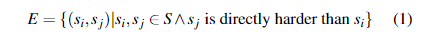
即，当且仅当sj比si直接困难时，才在部分排序图中存在从问题si到sj的（定向）边。 图1显示了部分排序图的示例。
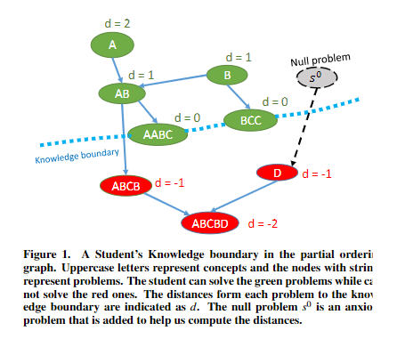
图一（部分排序图中的学生知识边界。 大写字母表示概念，带有字符串的节点表示问题。 学生可以解决绿色问题，而不能解决红色问题。 从每个问题到知识边界的距离以d表示。 空问题s0是一个焦虑问题，被添加来帮助我们计算距离）
定义3.我们用知识边界K衡量学生的能力，知识边界K是学生可以解决的最困难的问题。 形式上，如果这是学生可以解决的问题集，则
以图1中的偏序图为例。 假设一个学生可以解决问题A，AB，B，AABC和BCC（图中的绿色节点），而不能解决ABCB，D或ABCBD（图中的红色节点）。 然后，知识边界仅包含两个问题：AABC和BCC，因为没有其他“绿色”问题比AABC或BCC难。 知识边界不包括A，AB或B，因为存在一个“绿色”问题AABC，比所有问题都难
计算知识边界
We present a graph coloring algorithm of calculating a stu-dent’s knowledge boundary in the partial ordering graph. Thisalgorithm is based on two properties of the partial ordering: ifa student can solve problems, he must be able to solve anyproblems′that is at most as hard as s(s≥s′); if a studentcannot solve problems, he must not be able to solve any prob-lems′that is at least as hard as s(s′≥s). For example, if astudent can solve problem AB, he/she can also solve problemsA and B; if a student cannot solve problem ABCB, then he/she cannot solve problem ABCBD either.
我们提出了一种图形着色算法，用于计算部分排序图中学生的知识边界。 该算法基于偏序的两个属性：如果一个学生能够解决问题，那么他必须能够解决至多像s(s≥s’)一样困难的任何问题。 如果学生不能解决问题，则他必须不能解决至少与 s(s’≥s) 一样困难的任何问题。 例如，如果学生可以解决问题AB，那么他/她也可以解决问题A和B； 如果学生不能解决问题ABCB，那么他/她也不能解决问题ABCBD。
At the start of the algorithm, all the problems (nodes) in thepartial ordering graph are uncolored. The algorithm asks thestudent whether he/she can solve some problem s*. If thestudent can solve s*, all the nodes that are at most as hard as s*(including s* itself) will be colored ‘solvable’; if the studentcannot solve s*, all the nodes that are at least as hard as s* (including s* it self) will be colored ‘unsolvable’. Figure 2 shows how this coloring process works.
在算法开始时，部分排序图中的所有问题（节点）都是未着色的。 该算法询问学生是否可以解决某些问题s*。 如果学生能够求解s*，则所有与s*一样难的节点（包括s*本身）将被着色为“可求解”； 如果学生不能求解s*，则所有至少s*同等困难的节点（包括s*自身）将被着色为“无法解决”。 图2显示了此着色过程的工作方式。
The algorithm repeatedly selects an uncolored problem s* from the partial ordering graph, asks the student to solve it, and then updates the coloring of the graph based on the response. Thisis a greedy algorithm designed to minimize the number ofproblems that must be given to the student. Formally, if $n^+_s$ denotes the number of the uncolored problems that are at mostas hard as $s$, and $n^-_s$denotes the number of the uncolored problems that are at least as hard as s, then we can maximize thenumber of problems that can be colored based on the student’s response by greedily selecting a problem s* as follows:
该算法从偏序图中反复选择一个无色问题s*，要求学生解决它，然后根据响应更新该图的颜色。 这是一种贪心算法，旨在最大程度地减少必须给学生的问题。 形式上，如果$n^+_s$ 表示最多没有硬色问题的无色问题的数量，而 $n^-_s$表示至少至少像s一样硬的无色问题的数量，那么我们可以使可以 通过贪婪地选择问题s*，根据学生的回答进行着色：
预测特定问题的表现
到知识边界的距离 Distance to Knowledge Boundary
In order to recommend problems at appropriate difficulty levels to the students, we need to predict students’ performanceon problems. Existing IRT studies have proposed several popular models stipulating how student performance is related tostudent ability [46, 53]. However, they measure a student’sability and the difficulty of a problem using unidimensionalnumeric scores, which is incomprehensive [28].
为了向学生推荐适当难度的问题，我们需要预测学生在问题上的表现。 现有的IRT研究提出了几种流行的模型，这些模型规定了学生的表现与学生能力之间的关系[46，53]。 但是，他们使用一维数字分数来衡量学生的能力和问题的难度，这是不全面的[28]。
Ideally, prediction of a student’s performance would utilizemultidimensional metrics to measure the distance between aproblem and what a student already knows. The key technicalchallenge in the design of multidimensional metrics is thatit is impossible to measure this distance without taking intoaccount the hierarchical structure of the problem space. In ourframework, we can measure this as the distance from the prob-lem to the knowledge boundary in the partial ordering graph.We use signed numbers to distinguish which ‘side’ of theknowledge boundary a problem is on: problems ‘inside’ theboundary (which the student can solve) have positive distanceswhile problems ‘outside’ the boundary (which the student can-not solve) have negative distances. Using this distance, wecan leverage IRT models to predict a student’s performanceon new problems.
理想情况下，对学生成绩的预测将利用多维指标来衡量问题和学生已经知道的知识之间的距离。 多维度量设计中的关键技术挑战是，如果不考虑问题空间的层次结构，就无法测量该距离。 在我们的框架中，我们可以用偏序图中图中从问题到知识边界的距离来衡量这个问题。 学生可以解决）的距离为正，而“超出”边界的问题（学生无法解决的）的距离为负。 利用此距离，我们可以利用IRT模型来预测学生在新问题上的表现。
Here, we give the definition of this distance together with theexamples in Figure 1. Assume we have the universal problem set S, and a student can solve a subset of problems T. For example, in Figure 1,S={A, AB, B, AABC, BCC, ABCB, D,ABCBD},T={A, AB, B, AABC, BCC}, and the knowledge boundary K={AABC, BCC}. We calculate the distance fromany problems∈Sto the knowledge boundaryK, indicated as d(s, K), following the steps below:
在这里，我们给出该距离的定义以及图1中的示例。假设我们有通用问题集S，并且学生可以解决问题T的子集。例如，在图1中，S = {A，AB， B，AABC，BCC，ABCB，D，ABCBD}，T ＝ {A，AB，B，AABC，BCC}，知识边界K ＝ {AABC，BCC}。 我们按照以下步骤计算从任何问题∈S到知识边界K的距离，表示为d(s, K)：
Step 1: Calculate distances for problems on the boundary
步骤1：计算边界上问题的距离对于任何问题，
For any problemssuch thats∈K,d(s,K) =0.
对于任何问题s使得s∈K，d(s, K)= 0
For example, the distance of problems AABC and BCC is 0
例如，问题AABC和BCC的距离为0例如，问题AABC和BCC的距离为0
Step 2: Calculate distances for problems inside the boundary
步骤2：计算边界内问题的距离
For any problem s such that s∈T−K, based on the definition of K, there must be one or more s′∈K such that s′≥s (otherwise, s should be contained in K) , and
对于基于s的定义s∈T-K的任何问题s，必须存在一个或多个s′∈K使得s′≥s（否则s应该包含在K中），并且
where d is(s,s′) indicates the length of the shortest directed path from s to s′ in the partial ordering graph. If there is no directed path from s to s′, dis(s,s′) =∞. Note that if s′≥s ,then there must exist at least one directed path from s′ to s.
其中d is（s，s’）表示部分排序图中从s到s’的最短定向路径的长度。 如果没有从s到s’的定向路径，则dis（s，s’）=∞。 请注意，如果s’≥s，则必须存在至少一条从s’到s的定向路径。
For example, the distance of problem AB is 1, since prob-lem AABC, which is on the knowlegde boundary, is directlyharder than AB. Similar for problem B (BCC is direclty harderthan B). The distance of problem A is 2, since the shortest di-rected path from A to any problem on the knowledge boundary(which is A→AB→AABC) has length 2
例如，问题AB的距离为1，因为在知识已知边界上的问题AABC比AB直接困难。 与问题B相似（密件抄送比B硬）。 问题A的距离为2，因为从A到知识边界上任何问题的最短定向路径（A→AB→AABC）的长度为2
Step 3:Calculate distances for problems outside the boundary
步骤3：计算边界外问题的距离
In a hierarchical knowledge structure, it follows intuitively thatproblems that are further away from the boundary will be moredifficult to the student. Therefore, for any problemssuch thats∈S−T, we define the distanced(s,K)to be shortest directedpath from any problem inTtos. Note that this distance alsohas a teaching interpretation: if easier problems should alwaysbe taught before harder problems [55], then this distance alsomeasures the number of problems that need to be taught beforeteachings.
在分层的知识结构中，直观地认为，远离边界的问题对学生而言将更加困难。 因此，对于诸如s∈ST的任何问题，我们将距离（s，K）定义为距Ttos中任何问题最短的有向路径。 注意，这个距离也有一个教学上的解释：如果总是在较困难的问题之前总是先教更容易的问题[55]，那么这个距离也可以衡量在教学之前需要教的问题数量。
ince there are some basic problems that have no problemseasier than them, and thus have no incoming edges in the par-tial ordering graph, there is not always a path from a probleminTtos. For instance, there is no directed path from anyproblem inTto problemDin Figure 1. To resolve this, weadd anull problems0, the pseudo problem with no prerequisiteconcepts, toT. For any problems∈S−T, if there is no otherproblems′such thatsis directly harder thans′(namely,shas no incoming edges), we add an edge(s0,s)to the partialordering graph
由于存在一些基本问题，没有比这些问题更容易解决的问题，因此在空间排序图中没有传入的边，因此从问题中获取问题的路径并不总是那么容易。 例如，图1中没有从任何问题到问题D的直接路径。要解决此问题，我们将无问题先决条件的伪问题anull问题0添加到T。 对于任何问题∈ST，如果没有其他问题’使假设比’s’直接困难（即没有进入的边），我们将偏边（s0，s）添加到偏序图
Now there is at least one directed path from the null problem s0 or some problem in T to s. We can define the distance as:
现在，从空问题s0或T tos中的某个问题开始，至少有一条有向路径。 我们可以将距离定义为：
Note that d(s,K) is negative if and only if s is outside the knowledge boundary.For example, the distance of problem ABCB is -1, since itis directly harder than the “green” problem AB. Problem D has no incoming edges in the partial ordering graph, hence weadd an edge from the null problem s0 to D, and the distanceof problem D is -1 since the path s0→D has length 1. Lastly,the distance of problem ABCBD is -2. Actually, there aretwo shortest paths with length 2: AB→ABCB→ABCBD ands0→D→ABCBD.
请注意，当且仅当s在知识边界之外时，d(s, K)才为负。例如，问题ABCB的距离为-1，因为它比“绿色”问题AB直接困难。 问题D在偏序图中没有输入边，因此我们将零问题s0到D加上一条边，并且由于路径s0→D的长度为1，因此问题D的距离为-1。最后，问题ABCBD的距离为 -2。 实际上，有两条最短的路径，其长度为2：AB→ABCB→ABCBD和s0→D→ABCBD。
The metric of distance is dependent on the density of thepartial-ordering graph. This is inevitable since the measure-ment is based on the hierarchical structure of the problemspace. We believe that for most well-defined problem spaces,it is a reasonable assumption that the partial ordering graph will be sufficiently dense. We will demonstrate this metricworks well for a well-built Japanese language learning corpusin the next section
距离的度量取决于偏序图的密度。 这是不可避免的，因为测量是基于问题空间的层次结构。 我们认为，对于大多数定义明确的问题空间，可以合理地假设偏序图将足够密集。 我们将在下一部分中很好地演示此度量标准，以构建完善的日语学习语料库。
In the later part of this paper, we will use d to denote d(s,K) for convenience
在本文的后半部分，为方便起见，我们将使用d来表示d(s, K)。
Adapted Rasch model 改编的Rasch模型
In this section, we describe how we can adapt existing uni-dimensional IRT models to build a multidimensional metricthat leverages the partial ordering graph and the distance d calculated in the previous section in order to predict studentperformance. One of the most famous models of IRT, the Rasch model [53], stipulates that a student’s performancePis a function of the difference between the student’s ability θ and the problem’s difficulty b
在本节中，我们描述如何适应现有的一维IRT模型以建立多维度量标准，该度量标准利用上一节中计算的偏序图和距离d来预测学生的表现。 Rasch模型[53]是IRT最著名的模型之一，它规定学生的表现是学生的能力θ与问题难度b之差的函数。
xxx
In the next section, we will demonstrate that this adaptedmodel nicely fits the data collected from our knowledge as-sessment platform
在下一节中，我们将证明该适应模型非常适合从我们的知识评估平台收集的数据
知识评估的评价 EVALUATION OF KNOWLEDGE ASSESSMENT
In this section, we will the evaluate our calculation of the knowledge boundary and the distance represented in the previous section by applying it to a Japanese language learning domain.
在本节中，我们将评估我们的知识边界与上一节中表示的距离的计算并把它应用到一个日语学习领域。
语言评估平台 J100: A Language Assessment Platform
xxx
Reddit部署 Reddit Deployment
xxx
验证知识边界和距离度量 Validating the Knowledge Boundary and Distance Metric
In order to validate our calculation of the knowledge boundaryand the distance metric, we will demonstrate that the user datacollected from J100 nicely fits the adapted Rasch Model. Wecalculate a user’s knowledge boundaryKbased on his/her responses to the problems in the assessment stage, and foreach problemsresponded in the evaluation stage, we measurethe distance from the problems to the knowledge boundary K.The user responses in the evaluation stage can be regarded as users’ self-estimation of their performance, and we score thefive possible responses uniformly from 1 to 0
为了验证我们对知识边界和距离度量的计算，我们将证明从J100收集的用户数据非常适合改编的Rasch模型。 我们根据用户在评估阶段对问题的回答来计算用户的知识边界K，并针对评估阶段所回答的每个问题，测量从问题到知识边界K的距离。评估阶段中的用户响应可视为用户 对他们的表现的自我评估，我们从1到0对5个可能的回答进行了统一评分
过程分析 PROGRESSION ANALYSIS
良好的进步会增强学生对课程的参与度[43,56]，我们的工作旨在发现良好的进步的一般特征。 在本节中，我们将利用我们的框架来分析教育进度，并介绍良好进度的两个重要特征：组成Composition和步调Pace。 我们研究了现有课程，并证明了专家设计的课程中一些惊人的相似之处
组成：学习与复习的平衡 Composition: The Balance of Learning and Review
在设计教育进度时，一个关键的考虑因素是应该花多少时间来增强以前引入的知识，而不是引入新知识。 另一个需要考虑的问题是，通过以新的方式将概念组合在一起，进度是否应该越来越复杂。 理想情况下，我们将能够定义可以简洁地捕获这些重要方面的进度参数空间
xxx
我们可以认为强化是对已学知识的回顾，引入是纯学习，重组是两者的混合。 这三种类型的比例揭示了设计师在教育进步中平衡学习和复习的策略，我们将其称为进步组成
步调：知识的增长率 Pace: The Growth Rate of Knowledge
我们想知道进度中课程（章节，单元等）的难度是否以一致的速度增长，从而使学生可以顺利学习。 我们不是通过数字来衡量每节课的难度，而是计算知识的大小，即每节课之前引入的问题总数。 这可以用通用问题集5S中的问题数量来衡量，该数量被学生的知识边界归类为强化。在掌握了从一开始到当前课程的所有知识之后。 因此，知识大小| K |就是此类问题的数量
进度分析的评估
教材研究
在线语言学习工具研究
自动渐进合成
We have discussed two features of an educational progression:composition and pace. In this section, we will demonstratethat educational progressions can be automatically synthesizedaccording to specific composition and pace parameters. To bemore precise, a progression can be characterized as three nu-meric parameters: overall pace (pace), proportion of reinforce-ment (ri), and proportion of introduction (in). The proportionof recombination (rc) is redundant since ri+rc+in=1.
我们讨论了教育进步的两个特征：组成和步调。 在本节中，我们将证明可以根据特定的构成和速度参数自动合成教育进度。 更准确地说，可以将进度表示为三个数字参数：总体步速（步幅），增强比例（ri）和引入比例（输入）。 重组比例（rc）是多余的，因为ri + rc + in = 1
We use a greedy algorithm to synthesize progressions. Thealgorithm starts with an empty progression, repeatedly selectsthe next problem that minimizes the following error function and appends it to the progression:
我们使用贪婪算法来合成进度。 算法以空的级数开始，重复选择下一个使后继误差函数最小化的问题，并将其附加到级数上
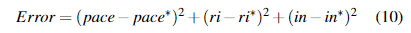
其中pace, ri, in 都是实际的渐进特性，而pace*, ri*, in*是所需的渐进参数。请注意，可能存在多个具有最小误差的问题。 在这种情况下，我们的算法会从中随机选择一个作为下一个问题
这种贪婪算法并不总是生成具有准确所需参数的级数。 但是，它运行得非常快。对于一个包含25个问题的通用问题集，它可以在一秒钟内合成100多个进程（每个进程有10个问题），因此，我们可以多次运行此贪婪算法以合成具有所需特征的进程
表2列出了合成过程的四个例子。 我们从Genki进程中提取了以下参数：pace= 0.465，ri = 0.582，in = 0.214。 然后，我们使用这些参数（大约）来合成“ Genki Simulation”进度。 我们还生成了另外三个带有量身定制的参数的进度，这些进度偏向于加强，重组和引入。 这些结果表明，我们不仅可以利用专家级进度设计的原理并使用对大多数学生都有利的参数来综合进度，而且还可以为具有特定偏好的学生量身定制进度
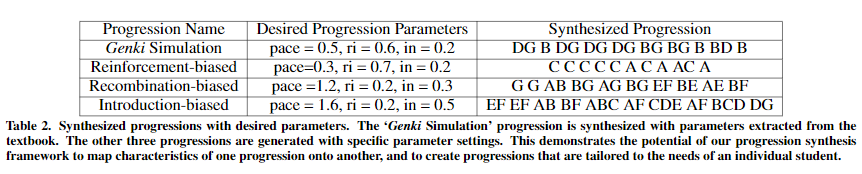
结论与未来工作
可学习性对于HCI的许多方面都很重要：用户界面，学习工具，视频游戏和软件可用性。 在本文中，我们定义了一个框架，该框架利用自动问题分解和部分排序图构造来促进与教育相关的多个工作流程：评估学生的知识，确定和描述课程的学习策略以及设计新的学习进度。 我们以多种方式评估了该框架：通过在线部署日语评估工具，自动从现有课程中提取起搏参数，以及将问题组合成符合所需起搏特征的新项目
我们希望将我们的框架用于几个教育领域，尤其是计算机辅助语言教育。 例如，我们计划利用我们的框架向第二语言学习者推荐适当的阅读材料，并改善用于语言学习的教育游戏[17，18]。 将来，我们不仅将框架应用于语法知识，还将应用于语言学习的其他方面，例如词汇和语义
我们希望这些想法将有助于实现一门进行性分析的科学，在该科学中，可以从涉及多个主题的进展中提取出测序和起搏参数，以识别最佳原则。 此外，我们希望扩展此框架，以便它可以自动构建能够快速进行初始评估和进度调整的自适应学习系统
ECDSA签名及验证
ECDSA私钥是取q为模后得到的整数x。相关标准规定x不得为0。 因此，x是在[1，q-1]范围内的整数。qlen为q的二进制长度。
签名的生成使用了密码学哈希函数H和输入的消息m。消息首先由H处理，产生值H(m)即消息m的hash，它是长度为hlen的二进制序列。通常，选择H使其输出长度hlen大致等于qlen，因为签名方案的总体安全性取决于hlen和qlen之间的最小值；但是，相关标准支持hlen和qlen的所有组合。
- 使用bits2int变换和额外的模块化约简将H(m)转换为整数模q：
1 | h = bits2int(H(m)) mod q |
正如在bit2octets的描述中所指出的那样，额外的模块化缩减只不过是有条件的减法。
生成称为k的取模q的随机值。 该值不为0。因此，它位于[1，q-1]范围内。在ECDSA中，应通过随机选择来选择k，该选择应以均匀的概率从q-1个可能的值中选择一个值。
根据k和关键参数计算出值r (modulo q)。计算出点kG；其X坐标（定义了E的字段的成员）被转换为整数，该整数以q为模减小，从而得出r。如果r变为零，则应选择一个新的k并再次计算r（这是完全不可能的情况）。
值s (modulo q)的计算如下：
1 | s =（h + x * r）/ k mod q |
(r, s)就是签名。ECDSA标准本身并未涵盖如何对签名进行编码； 常见的方法是使用DER编码的ASN.1结构（两个INTEGER的SEQUENCE，分别用于r和s），或者作为两个32bytes拼接为一个64bytes。
签名验证过程如下：
验证 r , s 都处于 [1, n-1] 范围内的整型数，否则验证失败
e为消息的hash值
计算z
计算参数 w :
$w=s^{−1}\ mod\ n$
计算两个参数 u1, u2 :
$u_1=zw\ mod\ n,\ u_2=rw\ mod\ n$
(x1, y1)，如果该点不是同一个曲线上的点，验证失败
$(x_{1}, y_{1}) = u_{1} \times G + u_{2} \times Q_{A}$
如果存在下面的恒等式，则验证通过，否则验证失败
$r≡x_1\ mod\ n$
TODO
生成不变的sign
Design of Contracts
说实话其实一开始压根没想做合约，就只是想做个chain。
但是后来发现你不做DAPP你的chain都没人看，那些做coin的也都在往DAPP靠。就有种被逼上梁山的感觉。不过还好现在有个去华山的路（WASM），可以考虑上了华山再往梁山飞。
其实我也不算是第一个选择华山飞梁山的，cosmos和eth2.0也选，不过人家有现成地图，我只能凭感觉乱飘。而且我们不是一个山头起飞的，他们选了更早被人发现的山头（wasmer），我选了个看起来粗大(?)一点的新山头（wasmtime）。
Hello World
Welcome to Hexo! This is your very first post. Check documentation for more info. If you get any problems when using Hexo, you can find the answer in troubleshooting or you can ask me on GitHub.
Quick Start
Create a new post
1 | $ hexo new "My New Post" |
More info: Writing
Run server
1 | $ hexo server |
More info: Server
Generate static files
1 | $ hexo generate |
More info: Generating
Deploy to remote sites
1 | $ hexo deploy |
More info: Deployment
Notes for FIT5195: Business intelligence and data warehousing
好家伙这个一上来我就听不懂……当初没分到信息管理现在遭罪……
S1 Intro
这门课是基于intro to db的，默认大家都是SQL老手了。同样的，BI和数据仓库也是在DB之上的概念。
Operational DB
企业拿来操作日常行为的数据库（买卖，预约 etc， 用来支持商业行为）
- 使用集中于事务
- 便于决策制定
- 但是决策分析能力不够
数据仓库
相比Operational DB加强了决策能力。
数据仓库是数据库的多维视图，具有聚合和预计算的摘要
建立数据仓库
通过将Operational DB转换为数据仓库来创建数据仓库
转换包括一系列数据操作步骤
所有的数据转换称为Extract-Transform-Load ETL
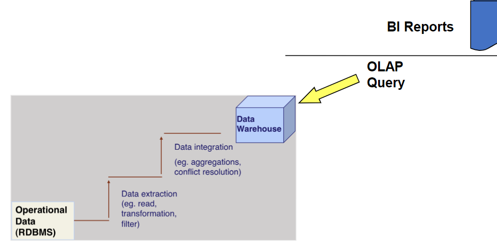
使用数据仓库
使用数据仓库的手段是从数据仓库提取数据以进行进一步的数据分析
从数据仓库中提取数据的查询是在线分析工具或OLAP
OLAP会捕获原始数据，该原始数据可以使用任何Business Intelligence（BI）工具格式化。
在OLAP中，对数据进行集中处理的数据最为重要。BI工具可用于进一步的表示和可视化
接收原始数据的BI工具可以任何形式表示数据：报告，图形，仪表板等
数据分析的需要
BI
“商务智能”（BI）是指描述用于捕获，收集，集成，存储和分析数据的综合，内聚和集成的工具集和过程，其目的在于生成和呈现信息以支持业务决策。
BI是一个框架，可以使企业将数据转换为信息，信息知识和知识能力不足。
一般而言，BI提供以下框架：
- 收集和存储运营数据
- 将运营数据汇总为决策支持数据
- 分析决策支持数据以生成信息
- 向最终用户显示此类信息以支持业务决策
- 制定业务决策，从而生成更多收集，存储和不久的数据（重新启动流程）
- 监视结果以评估业务决策的结果，从而可以收集，存储和存储更多数据
- 高度准确地预测未来的行为和结果
在实践中，第一点是收集和存储操作数据，这不会影响到操作系统的持久性；而恰恰相反，它会损害操作系统的功能。
但是，BI系统将使用操作数据作为信息的输入材料。
其余的过程和结果将前面的点解释为面向生成知识，并且它们是BI系统的重点
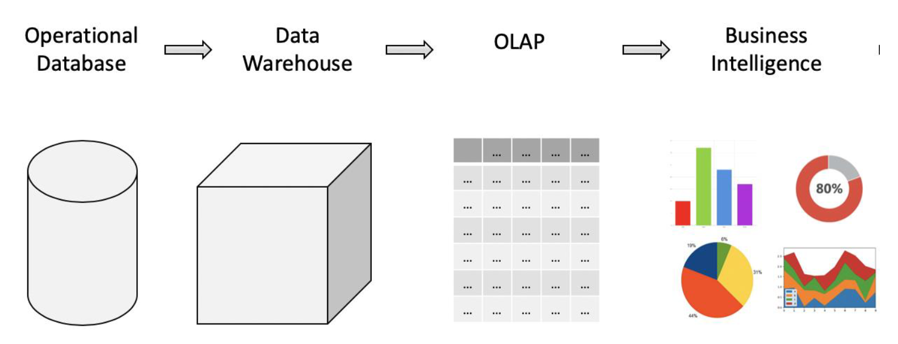
S2 星形架构 Star Schema
星形架构
了解星型架构及其对 Power BI 的重要性 - Power BI | Microsoft Docs
Star Schema 是多维视图的一种设计表示形式。是数据建模技术用于将多维决策支持数据映射到关系数据库中。
对于Star Schema的开发主义者来说，关系建模技术是一种错误的解决方案：ER和归一化，无需多余的数据库结构即可处理复杂的数据分析。
Star Schema由三个部件组成：
- Facts事实（可度量数值，表达特定商业领域或活动）
- Dimensions维度（其他属性，提供对Facts额外的视角）
- Attributes属性（包含在维度表中）
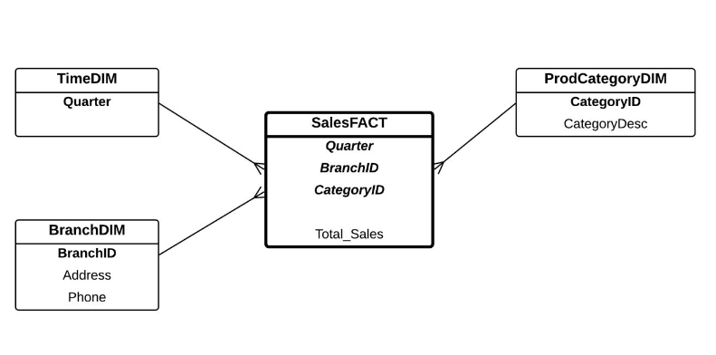
转化（ETL）流程
从ER图转为数据仓库（星形架构）
首先得有个分析点
双列表格法
创建星型模式时，您需要想象要分析的数据由两列组成。
第一列是类别（例如A，B，C，D），第二列是统计数字（例如 B）。
第二列（例如F）必须在所有两列表中保持一致。
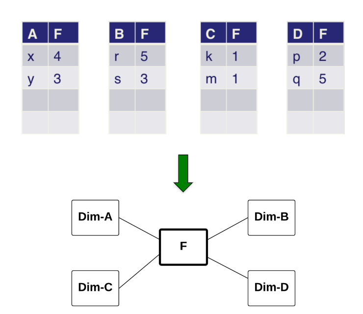
多个Facts下措施：
双列表中的第二列是数字事实度量值（例如F列），实际上可以是多列（称它们为：F1，F2， F3）
只要所有这些列（例如F1，F2， F3）涉及所有类别（例如A，B，C，D）。
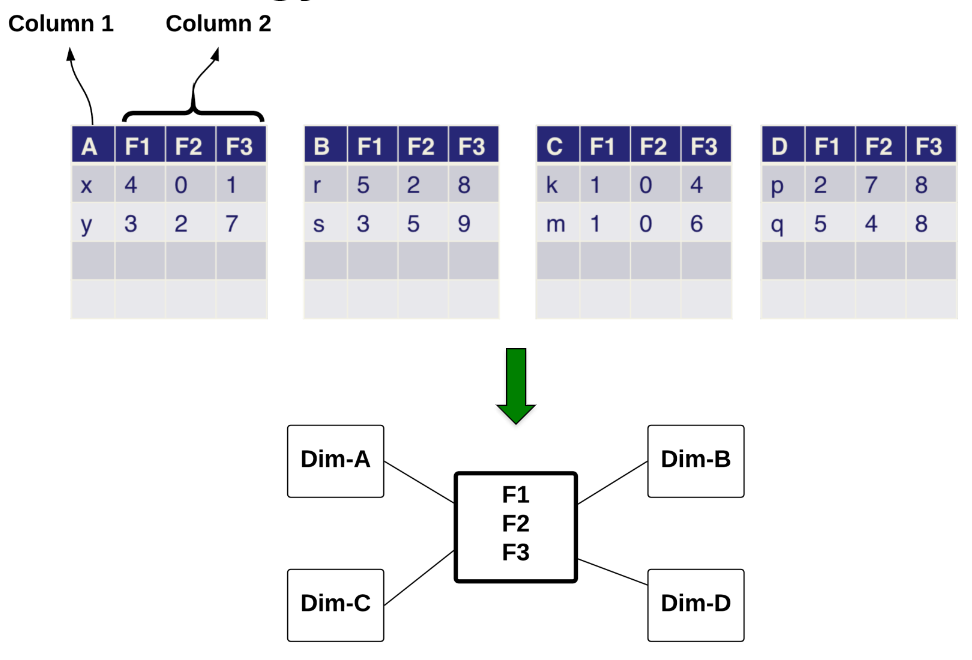
SQL
- 先建立各个维度表
- 将各个维度的行写入维度表
- 建立tempfact表：select where A.id=B.id将各个事实表源的列 as到tempfact表（即完成表建立又同时数据转移）
- 增加与源数据类型不同的列到tempfact表（例如源中DATE，事实表中NUMBER）
- 为4中的新列写入数据
- 最后建立fact表：使用group by从tempfact里把需要的列取出
S3 桥接表 Bridge Tables
好鸡儿难日常听不懂……
Bridge Tables
用来连接俩维度表（其中只有一个连接事实）
到Fact source路径上存在N:N关系（可能N:N被分为1:N和N:1）
you first need to identify the attributes required to calculate the fact measures, then circle the tables contain those attributes as a fact source. After that, you identify where the attributes needed to create the dimensions, and assess the relationship between those tables with the fact source table. If there is a many-to-many relationship and the dimension does not contribute directly to the calculation of the fact measure, a bridge table is needed
数据清理
好像这个直接默认是已掌握内容……orz
开始的时候，先问问自己
- How many records in the operational database?
- How many records in the data warehouse?
- What kind of data is in the operational database?
- How do the tables look like in the data warehouse?
先做data explorations
先对所有的operational database的table都select count(*)一遍
对比数据仓库和operational database
- 一致性检查：根据每个变量的合理取值范围和相互关系，检查数据是否合乎要求，发现超出正常范围、逻辑上不合理或者相互矛盾的数据
- 无效值和缺失值的处理
S4 Multifact
就讲讲怎么在一个DW里放多个Fact来更好地表达measure
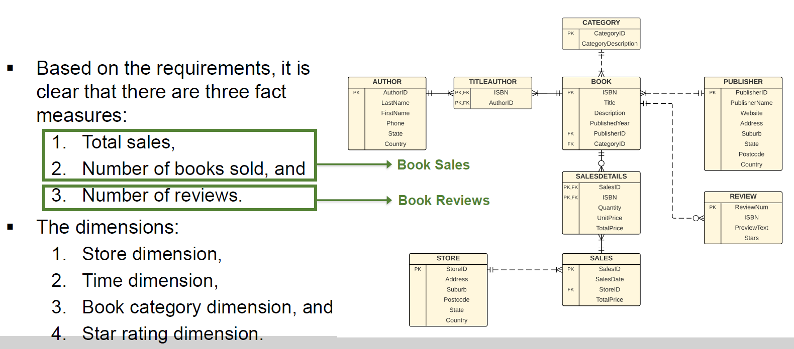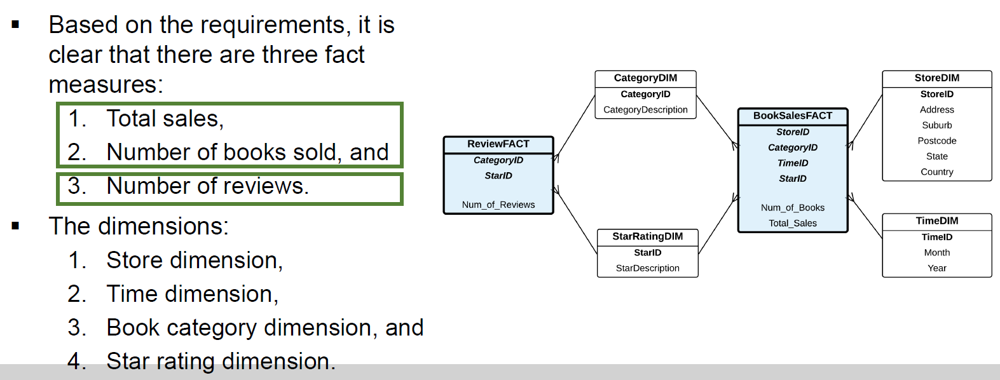
我们需要在Fact表中存放一个avg参数么？NO： Average of an Average
在FACT中存放平均值不是个好主意，那我们应该如何处理这些问题？
我们可以存放总数（total xxx）以及数量（number of xxx）
S5 DW Architecture
Data Warehouse Architecture
根据Tut来看讲的主要是multifact
Level of Aggregations
聚合程度，最次是Level0就基本上是从Operational DB里拿的字段，然后1然后2这样往上越大越浓缩就是精华
lower down level方法：
- 加个新DIM （）
- Replace an existing DIM with a higher granularity DIM（Fact的measure值也被分割）
S6 Temporal DW
Temporal (or historical) aspect of records is incorporated into the data warehouse
记录的时间（或历史）被合并到数据仓库中，比如 书籍价格随时间的变化
也叫做SCD（Slowly Changing Dimensions，缓慢改变的维度）
with Bridge Table
使用Bridge的话可以像加个弱实体那样加个DIM
像这样，其中BookID 和俩Date形成composite key
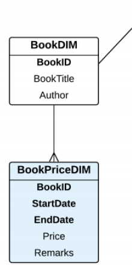
如果Book和BookPrice是1：1关系那就可以并到一起
例如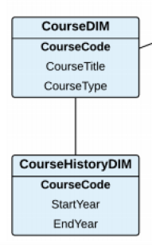变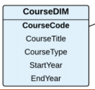
Temporal Attributes
Temporal attribute是一个属性，其值具有生命周期
例如，每个书价都有生命期（即时间限制），即BookPriceDIM表中的StartDate和EndDate
Temporal Dimensions
Temporal Dimensions是其中具有特定生命周期的维度表
例如图中BranchHistoryDIM（MerchandisePriceDIM算Temporal attribute）
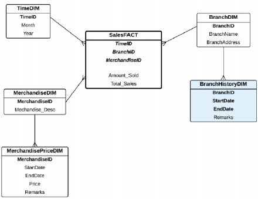
Slowly Changing Dimensions
主要讲SCD的几个种类，定义前面说了。值得一提的是这个Slowly也是很重要的，对于快速改变的值，比如股票价格，车辆位置，需要的是实时(realtime) DW，或者说流式(stream)DW
Type 0
实际上并不在DIM上存历史数据
建立数据仓库时，DIM存储记录的“原始或初始”的值
例如：book的全价记录在BookDIM中
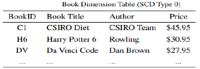
Type 1
和T0一样实际上并不在DIM上存历史数据
只记录最新值
例如：Book最新价格将记录在BookDIM中
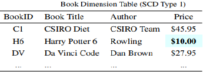
Type 2
从主DIM跟踪历史
例如：更改Book价格后，会创建具有相同详细信息的“另一本书”，有新的BookID和新价格
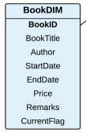
Type 3
简化版T2
仅保留当前（Cur）和前一个（Prev）的值，而不保留整个历史记录
例如：仅记录书的最后两个价格
基本原理：
- 假设不需要分析完整的历史记录
- 大多数分析将以当前价格和最多一个过去价格（例如， 与趋势比较
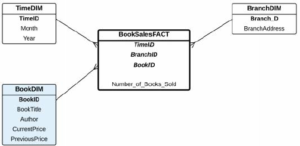
Type 4
创建一个新DIM来维护attribute 变更的历史记录
如前面（with Bridge Table那里）的BookPriceDIM
主要优势：同一本书无需具有其他BookID。 此外，保留更改的全部历史记录。
Type 6
T2和T3的结合。同一本书不需要单独的ID（同T3），但是会保留整个历史记录（同T2）
Composite key {BookID, StartDate, EndDate}
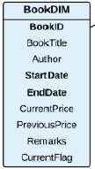
如果由于Date，BookDIM和BookSalesFACT之间存在M:M关系
Sol1：给BookDIM加个新的surrogate key
Sol2：把StartDate和EndDate加到FACT->与TimeID混乱
Sol3：加个辅助性的表（或Bridge Table）在BookSalesFACT和BookDIM之间->也乱
结论：Sol1最佳
S7 Snowflake Schema
给Star的DIM分个层级（Hierarchy）就变Snowflake了
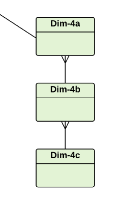
注意1:M关系，不能整倒了
Determinant Dimensions
显性维度
在Star schema下检索的所有数据都必须使用此DIM，否则检索的数据将变得毫无意义。例如PetrolType
差不多就是做Schema之前问题里都提到的一个要素吧
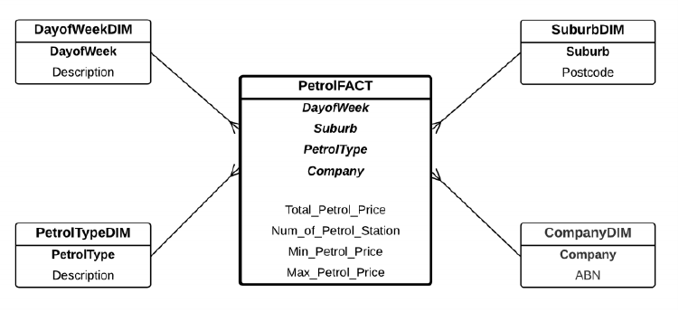
S8 OLAP
熟悉的SQL
基础
COUNT([distinct] A)
SUM([distinct] A)
AVG([distinct] A)
MAX(A)
MIN(A)
GROUP BY
进阶
CUBE：扩展GROUP BY子句以在单个查询中生成交叉表格式的信息。
ROLLUP：扩展GROUP BY子句以生成从最详细到总计的越来越细粒度的聚合。
GROUPING：与SELECT语句一起使用，以显示有关聚合级别的信息以及每个聚合级别的相关小计。
Partial CUBE：GROUP BY expr1, CUBE (expr2, expr3)
Partial ROLLUP：GROUP BY expr1, ROLLUP (expr2, expr3)
高阶
RANK( ) OVER ([query_partition_clause] order_by_clause)
DENSE_RANK( ) OVER ([query_partition_clause] order_by_clause)
DENSE对于同rank重复情况下只加一
RANK() OVER (PARTITION BY order_by_clause)
例如select RANK() OVER (PARTITION BY channel_desc ORDER BY SUM(amount_sold) DESC) AS RANK_BY_CHANNEL from XXX
如果需要显示多个属性的排名，则需要对聚合进行分区（PARTITION BY），以便可以为每个指定的属性显示适当的排名
select rank() from XXX 外面再套个select * from () where rank<5来实现TopN
ROW_NUMBER函数为分区中的每一行分配一个唯一的编号（依次从1开始，由ORDER BY定义）。有点像sequence。用来手动排rank
ROW_NUMBER() OVER ([query_partition_clause] order_by_clause)
PERCENT RANK
percent_rank() over (order by sum(f.revenue) desc) as “Percent Rank”
Cumulative Aggregates
SUM(SUM(XXX)) OVER (ORDER BY aaa,bbb ROWS UNBOUNDED PRECEDING)
UNBOUNDED表示无界，PRECEDING前
解析函数SUM为每一行定义一个窗口，该窗口从分区的开头（UNBOUNDED PRECEDING）开始，默认情况下在当前行结束。
在此示例中，需要嵌套SUM，因为我们正在对本身就是SUM的值执行SUM。
嵌套聚合在分析聚合函数中经常使用
SUM(SUM(XXX)) OVER (PARTITION BY aaa ORDER BY aaa,bbb ROWS UNBOUNDED PRECEDING)
Moving Aggregate
(AVG(SUM(XXX)) OVER (ORDER BY aaa,bbb ROWS 2 PRECEDING)
(AVG(SUM(XXX)) OVER (ORDER BY aaa,bbb ROWS 2 PRECEDING)
用两个的平均表现moving
S9 BI
Navigation Methods
Drill Down
Drill Up (a.k.a. Roll Up)
Drill Through
Drill Across
EXAM
考试就是1-9的内容。较难，不熟练会时间来不及（就是我）。
考试内容和模拟考形式完全一致
Notes for FIT9131: Java
学校要求的是使用bluej这个ide/editor。这个工具和intellij idea不同，完全是面向教学，写Java有种写script的感觉。可以拿来写各种class但是不能保存各种实例化的object。
到目前（W4）为止，内容都是很简单的。
到W7也還是很簡單……
到W12依然还是很简单……
最后考试大概是没考好，明明ASS全HD但最终只有79没拿到HD太可惜了
Notes for FIT9136: algo & python
W5
OOP
py3直接用class XXX:而不是2的class XXX(object): (3里俩写法等价)
W6
Stack: LIFO
Queue: FIFO
Heap: 就是一种特殊的树Tree。顶部（root）为一个极值（子树也是）。其中Node之间的连接叫Edge
W7
Complexity
复杂度这个概念和后面的各个算法都有关，所以挺重要的。
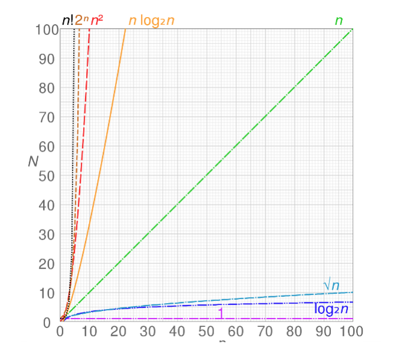
计算方法是：
把算法函数内每个步骤的复杂度取出来，然后+起来
比如
2N + 2 -> O(n)
n^2 + n + 1 -> O(n^2)
log(n) + n + a -> O(n)
本质就是留下复杂度最大的那个（瓶颈）
这里1，N，N^2，N^N这些复杂度都很好理解。
但是log(N)是什么情况？
stackoverflow这里给的例子就比较全面。
O(log n): 选择要在其上执行某些动作的下一个元素是几种可能性之一，并且仅需要选择一个。
例如：给定一个人的名字，找到他的电话号码。所用方法是在尚未搜索的那本书（有序！）的一半左右随机选择一个点，然后检查该人的名字是否在该点上。 然后在此人名字所在的部分的一半左右重复该过程。（即对人名的binary search，二分法）
O(n log n): 打印机办公室里有些混乱，我们的电话簿中的所有页面都是随机插入的。 通过查看每个页面上的名字，然后将该页面放在新的空电话簿中的适当位置，可以更正顺序，使其正确无误。
Searching Algorithm
Linear Search太简单，就一个个代，略
Binary Search参考上面O(log n)解析
Sorting Algorithm
Bubble Sort: 就左右互换直到所有 左<右。一般就先把最大/最小挪到位然后再排。平均和最坏都是O(n^2)，最好是O(n)
1 | def bubble_sort(the_list): |
Selection Sort: 找index后面最小的然后互换。O(𝑛^2)
1 | def selection_sort(the_list): |
Insertion Sort: 把每个源数组的元素有序地丢到新数组里。（比如先丢5，然后看见8了再丢5后面，看见7了确定丢5和8中间）。O(𝑛^2)
1 | def insertion_sort(the_list): |
W8
二叉树和二叉搜索树
二叉树本身不带规则，只规定这形状，要用起来就得自己给它加点规则
二叉搜索树就是带了“左边小于右边”这个规则
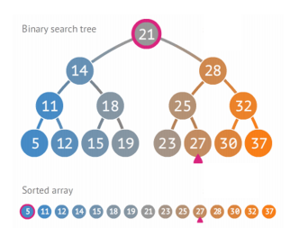
Breadth（宽度） First Search (BFS)，即优先找横的（跨node！）
Depth First Search (DFS)，即优先找竖的（顺藤摸瓜）
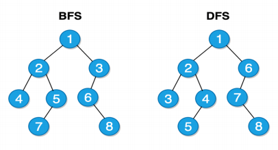
这些1234是查找时候的序列，不是值
另外还有个平衡Balance的概念，就把深度对对齐（±1）。
Balance有助于减少搜索步数N -> logN
W9
测试，错误处理和外部库（讲的标准库，numpy，pandas和matplotlib）
assert onFalse, “err”
对于代码
1 | mark = 0 # variable to change |
Valid (positive) cases:
- Based upon “correct” input data
- Examples: 55, 60, 65, …, 85, 90, 95, …
Invalid (negative) cases:
- Based upon “incorrect” input data
- Examples: -1, 0, 5, …, 45, 49, 101, 200, …
Boundary cases:
- Boundary values of the “equivalence class” for valid cases
- Examples: (49, 50) and (100, 101)
- 即一个pair，其中元素一个能success一个就fail
W10
文件，库和包（RegExp）
W11
11和12有点难，Quiz11-12直接大意失荆州。
Divide-and-Conquer
大意就是将func中任务细分（divide）然后逐个解决（conquer）最后合并（combine）
Binary Search
Binary Search是作为Divide-and-Conquer的例子出现的，并不是之前的BST（Binary Search Tree，w8内容）
迭代
1 | def binary_search(the_list, target_item): |
递归
1 | def rec_binary_search(the_list, target_item): |
Recursive
递归，简单，略
Merge Sort
Merge Sort是作为Recursive的例子出现。
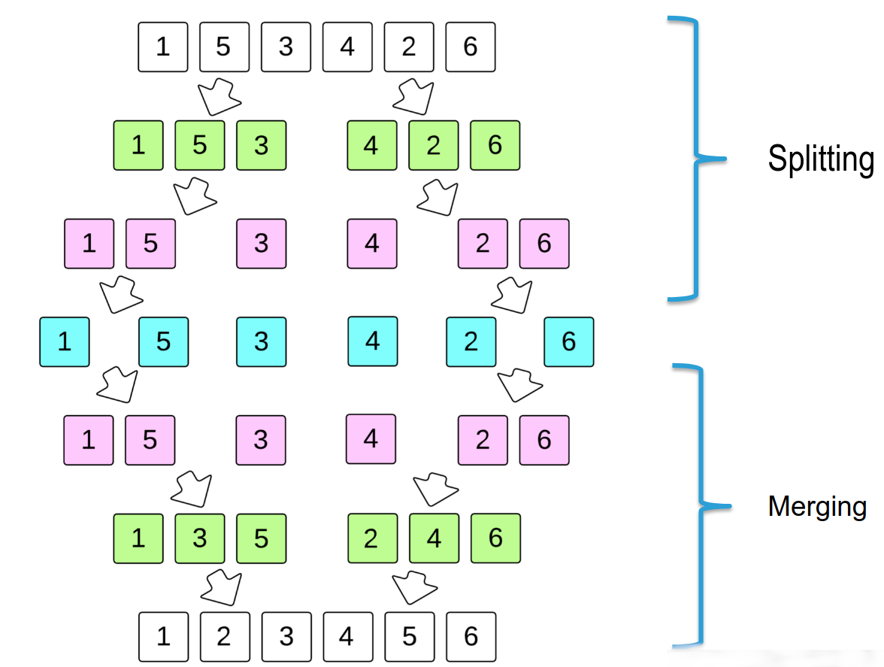
1 | def merge_sort(the_list): |
Quick Sort
Quick Sort也是作为Recursive的例子出现。
- Divide: Select a “pivot” to serve as the partition point
- Elements smaller than the pivot are relocated to the left of the pivot
- Elements greater than the pivot are relocated to the right
- Conquer: Recursively partition the sublists based on the pivot chosen for each sublist
- Combine: No computation needed
- Base case: A sublist with length of one (considered sorted) or with zero length
- Best case: O(n*log(n)) Worst case: O(n^2)
1 | def quick_sort(the_list): |
W12
Greedy Algorithm
- 适合通常不会产生最佳解决方案的情况（就是没法直接一个solution直接撸
- 解决背包问题（Knapsack，即怎么把东西放到容量有限的背包里能收益最大化）
- greedy不会先想着去满足最优，而是先想着把要求（塞满背包）给优先满足
- 有时，任何一种立马得出的解决方案都比几天之内才想出来的的最佳解决方案要好。
- 通常，某些算法会在运行时找到最佳解决方案，但需要一种假设的解决方案才能开始工作。 Greedy可以很容易地做到这一点。
Brute-Force
- 保证算出最优解Brute force guarantees the optimal result will be discovered because it explores every possibility.
1 | def brute_force(solution, N): |
Backtracking
- Backtracking is an improvement on Brute-force. It ensures that only solutions that are possible are generated.
- Backtracking is a more elegant brute force. Behold(看作) what happens when brute force attempts to find a solution.
用来解决类似N皇后（N*N的棋盘上放N个皇后）问题。本质也是暴力穷举
错题
What is the name of the following sort algorithm?
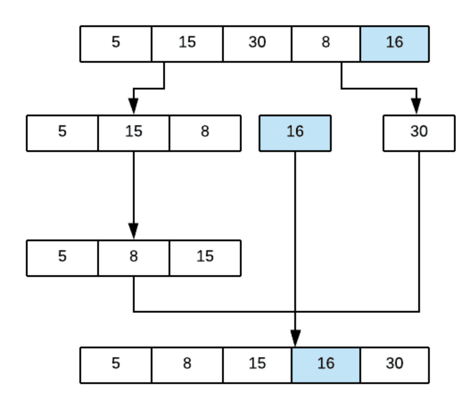
Select one:
A. Merge Sort
B. Selection sort
C. Quick sort
D. Bubble sort
A: Quick sort
What is the name of the algorithm for the following method ?
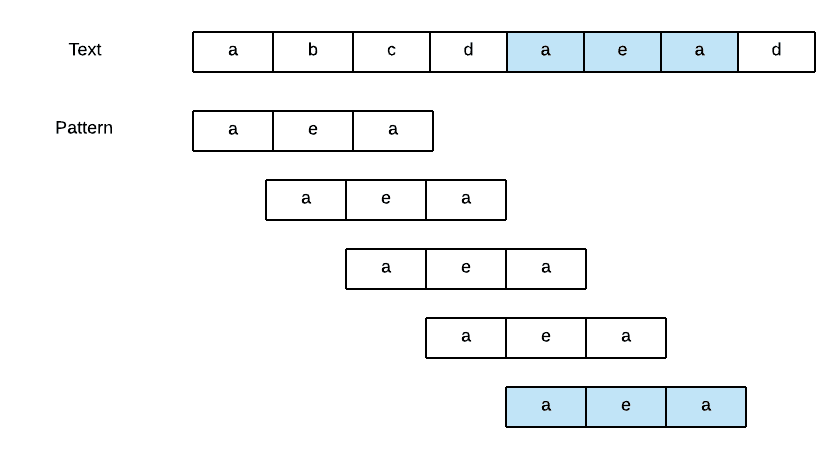Select one:
A. Backtracking
B. Boyer - Moore
C. Greedy
D. Bruce Force
A: Bruce Force
Which of the problems or puzzles cannot be solved by backtracking method?
Select one or more:
A. travelling salesman problem
B. Knapsback
C. crossword
D. n-queen problem
A: A&B
只选了A，因为当时quiz时候找不到A。现在找发现好像C也找不到。
Crossword是通过边上给的提示来猜出一个N*N矩阵上的每个英文字母（含黑块，不用填）。因为和N-Queen一样只要得到一个解就能结束所以就能用backtrack。
Knapsback是背包问题，Greedy的案例。
travelling salesman problem根据Wikipedia解释就是解决*Given a list of cities and the distances between each pair of cities, what is the shortest possible route that visits each city exactly once and returns to the origin city?*差不多就多点路线规划，个人理解应该需要Greedy
In Brute Force, the best-case running time is O ( nm )
A: F
The time complexity of brute force is O(mn), which is sometimes written as O(n*m) . So, if we were to search for a string of “n” characters in a string of “m” characters using brute force, it would take us n * m tries. 另外没有best-case的说法
Which of the following problems can be solved using a backtrack problem ?
Select one or more:
A. M colour map
B. N-Queen Problem
C. Knapsack
D. Tower of hanoi
A: A&B&D
相比上面的又多了俩游戏。
M colour map，没找到，但是个人理解应该指的是Four color theorem。用M种颜色不接触地涂满全部。
Tower of hanoi，汉诺塔。找出方法从左搬到右
Which of the following is true about Quick and Merge sort
Select one or more:
A. The quick sort is an internal sorting method where the data is sorted in main memory.
B. None of the above
C. Quick sort is more efficient and works faster than merge sort in case of smaller array size or datasets.
D. Merge sort is more efficient and works faster than quick sort in case of larger array size or datasets.
A: A&C&D
Quick Sort是一种内部排序方法（大概是说它不引入别的所以是内部？），其中数据在主内存中排序。√
在较小的数组或数据集的情况下，Quick Sort比Merge sort更有效且工作更快。√
在较大数组大小或数据集的情况下，Merge sort比Quick Sort更有效且工作更快。√
Which of the following is the most stable sort and has less time complexity ?
Select one:
A. Merge Sort
B. Quick Sort
C. None.
D. Bubble Sort
A: Merge Sort
Merge Sort的复杂度见下面
The average case and worst case complexities for Merge sort algorithm are
Select one:
A. O ( n^2 ), O ( n^2 )
B. O ( n^2 ), O ( nlog2(n) )
C. O ( nlog2(n) ), O ( nlog2(n) )
D. O ( nlog2(n) ), O ( n^2 )
A: C. O ( nlog2(n) ), O ( nlog2(n) )
Merge sort总是要迭代到
这样全部打散
For two objects x and y:
- x is y is True
if and only if- id(x) == id(y)
A: T
if and only if表示当且仅当所以正确
What things is an object associated with ?
Select one or more:
A. Value
B. Element
C. Object type
D. Data type
A: Data type , Object type
Val & Elem都与Obj无关
What are the main applications of tree data structure?
- Manipulate hierarchical data
- Make information easy to search (see tree traversal).
- Manipulate sorted lists of data
- Router algorithms
- Form of a multi-stage decision-making, like Chess Game.
- As a workflow for compositing digital images for visual effects
Select one:
A. 1, 2, 3, 4 and 6
B. 1, 3, 4, 5 and 6
C. 1, 2, 3, 4, 5 and 6
D. 1, 2, 3, 4 and 5
A: C. 1, 2, 3, 4, 5 and 6
答案是全对。当时没选6，没注意主语是workflow。用Tree来表示workflow是可以的
What does “+” mode mean, while working with files?
a. Append
b. Write
c. Read
d. Read and Write
A: d. Read and Write
选错选了a. Append。Append应该是”a” mode
Exam
总体简单，大量送分，全程基本都是写写写没选择
考了Depth First Inorder/Preorder/Postorder Tree 和Breadth First的List View（始料未及
还有手撸的selection sort
另外之前关注的valid/invalid/boundary test果然成考点
最后只有75，感觉考试扣分还是很严重
Notes for FIT5152: UI Design
首先在各种公开消息来源上都说这个是刷分水课来着。再加上本身自己在设计上想要有点提高（怎么说也算当过艺术生的），又经常有需要设计的场景（项目别太多）。现在也是前端更火热，所以掌握这个是很有价值的。
总算总结完了，感觉这门课可以改名叫UI Guidelines了……太tm多了这内容
[TOC]
S1 Introduction to HCI and User Interface Design
成吨的理论知识……后面几个S分别扩展
HCI，即人机交互，包含了为达成某目标的一系列行为
系统开发生命周期
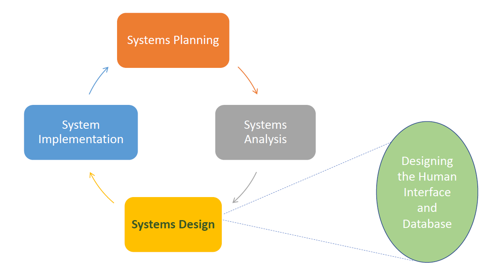
交互式系统设计

HCI主要的三个方面
- 我们如何设计？（谁是用户？哪些任务？）Design
- 我们如何构造？Prototyping
- 我们如何评估？Evaluation
Design：
获取数据及定义需求-> 用户分析，任务分析，环境/域分析，数据收集方式：采访，问卷，目标组或观察
Conceptual Design：
描述系统该做什么以及长啥样
Physical Design：
考虑系统实际细节
Prototyping
Assignment3的内容
Low-fidelity (paper) prototyping
High-fidelity (digital) prototyping
Native prototyping
Evaluation
Expert reviews专家审阅： Heuristics evaluation 启发式评估, Cognitive walkthrough 认知走查
Usability testing
Field studies
Observation
Usability
is a quality attribute of the UI
effectiveness, efficiency, and satisfaction in a specified context of use
Importance of UI Design
lead to user satisfaction, business success, and cost savings…
User-Centered Design
puts human needs, capabilities, and behavior first
match the needs and capabilities of the people
based on the needs and interests of the user
Users’ tasks and goals are the driving force
Why to involve users
- Users bring important knowledge of work tasks
- Designers can gain a better understanding of users’ needs and goals
- Greater acceptance of the system often results
- Fewer problems during development
- Lower maintenance costs over time
- Products that are easier to learn
- Reduction in errors
- Users develop a feeling of ownership through contributing to the development
Human-Centered Design
Human-centred design puts more emphasis on all stakeholders, and not just ‘users’
Principles of Human-Centered Design
The ISO standard describes 6 key principles.
These principles apply to user-centred design as well.
• The design is based upon an explicit understanding of users, tasks and environments
• Users are involved throughout entire development
• The design driven and refined by user-centered evaluation
• The process is iterative
• The design addresses the whole user experience
• The design team includes multidisciplinary skills and perspectives
S2 Everyday Design
实际上的标题是Design Theories, Models and Principles
Discoverability
Visibility
Visibility is not just about what you can see
Principles of Discoverability
- Affordances: 就像椅子、button一样一看就知道咋用
- Signifiers: 当affordance不能被察觉的时候拿来提示的（比如门上push, pull的贴纸
- Feedback: 反馈（比如震动
- Constraints: 约束，约束用户行为别乱搞乱用
- Mappings: 两类物品之间的映射关系（如音量+-，还有插头插座
Conceptual model of the system
系统的理论模型
It provides understanding about the meaning of the controls and settings and what all that means
Users
尝试解释产品如何工作
在用户脑子里的叫mental models，通常根据experience, training or interaction with the product来形成
Designers
可能和用户的（mental models）不同
和用户的交流局限于系统印象
- the physical structure of the product, and the discoverability through using affordances, signifiers, constraints and mappings
- technical manuals and documentations
Knowledge in the head
the knowledge in the human memory system
requires learning
也可以把knowledge of the world然后转进head
Knowledge in the World
external knowledge
客观存在的知识
Much of the knowledge need to perform tasks can come from the information in the world (using affordances, signifiers, feedback and mappings)
比如键盘布局！
Cognitive Process
认知过程
include:
attention (the first step) can be visual or auditory, 就听or看见
perception and recognition, 洞察与辨别
memory, 记下来
Learning (and then reading, speaking and listening) 学习
reasoning and problem solving (reflective cognition) 推理与解决问题（反射式认知）
交互时涉及大量认知过程
Memory
the ability to store and remember information
Sensory memory
感官记忆，很短，且如果无意识就很快忘
Short-term (or working) memory (STM)
少量信息。短时间
接触新界面时候，会学习到新元素的使用，会存储这部分内容
好设计应当减少其发生（E.g. using ‘recognition rather than recall’）
Long-term memory (LTM)
retain the information for hours, months or years
无限容量
过去经历和知识的存储位置
形成了产品的mental model
Cognitive Load
认知负载。处理某任务所花费的气力
减少memory load就能减少cognitive load。这对好的界面设计非常关键
External Cognition
external representations and aids
应该最小化用户需要记忆的内容
通过外部认知能过减小load
– Externalising 外部化
• Transforming knowledge into external representations, e.g. using a calendar or diary (birthdays, appointments)
– Computational offloading 计算方面减负
• e.g. a calculator
– Annotating and cognitive tracing 注记或者认知追踪
• such as Word Track Changes
S3 Requirement Gathering, Task Analysis
Data gathering
首先需要收集 user, tasks, the context of use, the environment/domain and if any constraints
techniques
- Studying existing documentation
- Researching similar systems/products
就多看书or多抄
或者S1里Design里那些
KYC（Know your user）
一些重要指标
▪ Demographics: age, gender, occupation
▪ Needs, capabilities and limitations
▪ Digital literacy
▪ Cultural background
▪ Social status
Design Personas
Personas大致就是代表性用户画像的意思
Design personas: Focus more on user goals, needs, motivations, and user behaviour
Each persona usually have 2-4 goals
Goals are different from tasks, which are performed to achieve goals
Scenario: 场景， 就脑补（narrative叙述）一个persona通过交互实现goal的情形
Task Analysis
Hierarchical Task Analysis (HTA)，就Assignment里画过的那东西。就尽可能分割任务然后用图表述。
S4 Navigation, Menus
Navigation
finding information by navigating through the interface
主要是解决fps游戏三大问
– Where am I? 我是谁
– What’s here? 这是哪
– Where can I go from here? 我该去哪
It requires understanding user needs and behaviour, identifying tasks, and effective content organisation
Structural Navigation
根据页面层级
顶级页面的主导航
次级页面里的二级导航
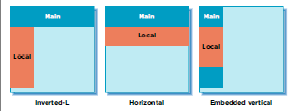
Associative Navigation
Associative navigation connects pages with similar topics and content or with the same level of importance without considering their location in the hierarchy
辅助性导航就属于是常驻的，不管页面层级
- Footer navigation
- quick links
- Contextual navigation
Contextual Navigation：
发生在内容上的导航
- Embedded navigation (e.g. Links within the text)
- Related links
- Usually provided at the end or to the side of page
- Adaptive navigation
- E.g. the links change based on what the site visitors do/select
Utility navigation
工具导航（不被包括进页面层级
– Navigation between pages and features that helps with using the interface
比如搜索栏
Visual Flow
扫描顺序为Z形，阅读顺序为F形
▪ Consider the logical flow of the users’ tasks.
▪ Create a logical path.
▪ Minimise eye movement.
▪ Use alignment and size uniformity for screen elements
。。。
S5 Form Design
Issues with Forms
可能存在问题：
▪ Too long
▪ Unclear purpose, asking for information that irrelevant to the user’s goals
▪ Poor information about the requirement of a given field，内容提示不足
▪ Asking for the same (or similar) information more than once，重复
▪ When there is an error, it does not clearly indicate where it happened or how it can be corrected，错误提示不足
▪ Not clarifying the right data format
▪ Not providing the necessary space，太窄
▪ Taking user control away，不自由
Data Quality Problem
就提交上来的数据存在的问题
▪ Data entered in the forms are often incomplete or have poor quality
▪ Well designed forms can improve data quality
▪ 目标：ensure correct data entry with minimal user effort
用户填表顺序
- Understanding the question
- Finding an answer
- Judging an answer
- Entering the answer on the form
Guidelines
!important 这东西重要
- Meaningful, familiar and standard field labels
- Consistent terminology and abbreviations
- Optional and required fields clearly marked
- Comprehensible instructions
- Use visible space and boundaries for data entry fields
- Differentiate grouped items
- Visually appealing layout (alignment)
- Use lists if possible to minimise errors
- Immediate feedback
- Completion feedback
S6 Evaluation
Evaluation and Usability Testing
Evaluation Aims
评估目标
- Are the options and controls visible to the user?
- Does the user know how to interact with the UI elements?
- Is the navigation and workflow appropriate?
- Does the product do what the user expected it to do?
- Is the functionality correct from the user’s perspective?
- What are the good and poor features?
作用
- Extensive testing is a key to successful design.
- To understand how real users use the product and if it meets their needs.
- To identify the issues and addressing them.
- To reduce user errors.
- To improve user experience and increase user satisfaction.
- To ensure the product meets the standards and guidelines.
- To compare with similar products.
- It is cheaper to fix a problem earlier in development than later.
Types
Experts:
- Cognitive walkthrough
- Heuristic evaluation
User:
- Usability Testing
- Field studies
- Thinking aloud
Expert reviews
专家审阅
identify usability problems and provide recommendations
早期或晚期
存在问题：
- Even knowledgeable experts might not know how real users, particularly first-time users, will interact with the product
- experts may not have an adequate understanding of the task domain or user communities.”
Cognitive Walkthrough
认知走查
用于设计早期
Heuristic Evaluation
启发式评估,，就assignment内容
– Nielsen’s 10 heuristics
– Shneiderman’s Eight Golden Rules
Nielsen’s 10 heuristics
- Visibility of system status
- Match between system and the real world
- User control and freedom
- Consistency and standards
- Error prevention
- Recognition rather than recall (menu: to underline text, you look at the menu and recognise the option)
- Flexibility and efficiency of use
- Aesthetic and minimalist design
- Help users recognize, diagnose, and recover from errors
- Help and documentation
Shneiderman’s Eight Golden Rules
- Strive for consistency (=N#4)
- Cater to universal usability (=N#4)
- Offer informative feedback (=N#9,)
- Design dialogs to yield closure
- Prevent errors
- Permit easy reversal of actions (undo)
- Support internal ‘locus of control’
- Reduce short term memory
S7 Prototyping
成功UI的四支柱Four pillars：
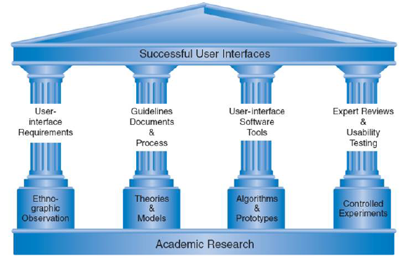
- User interface requirements
§ Right and complete requirements are key - Guidelines documents and processes
§ Design principles that must be adopted within the design - User-Interface software tools and prototyping
§ To give users a clearer idea of design and its implications - Expert reviews and usability testing
§ To evaluate the design
Prototyping
重要性
– test their ideas,
– test possible alternatives,
– clarify requirements,
– validate requirements,
– solicit feedback
– identify problems
– and improve the final product
类别
Level of fidelity:
§ Low-fidelity prototypes
§ High-fidelity prototypes
Type of medium used:
§ Sketching and paper prototypes
§ Digital prototypes
§ Native prototypes
Level of interactivity:
§ Static prototypes
§ Interactive prototypes
Level of detail:
§ Horizontal prototypes
§ Vertical prototypes
low fidelity
adv
• Simple, cheap and quick to create.
• Truly hands-on because the designers have to manually manipulate the content.
• The process of cutting, pasting, sorting, labelling forces designers to become familiar with the content elements.
• It can be constructed quickly and efficiently and taken anywhere.
• Even in a rough form, it gives the users a good idea of content organisation and navigation.
• Easy to refine in the final product.
• Prototypes appear to enhance teambuilding skills.
• With low-fidelity prototypes, users and designers are often more willing to suggest changes.
• Users are more comfortable working with paper and criticising it rather than the real system.
• Users recognise it as a ‘prototype’ so feel more free to make recommendations.
• It allows for more iterations.
• It allows to test with more users and identify more problems.
High-Fidelity
adv
• Interactive
• Enables testing navigation, graphical elements and colours, legibility, image quality, alignment and spacing.
• Looks and works more like the real product, resulting in more useful feedback.
• Designers can show and test real flow and interactions.
• At this stage certain limitations become apparent that were not identified earlier in the design.
disadv
• It is not as cheap as low-fidelity prototypes.
• It is not as fast as low-fidelity prototypes.
• It cannot be taken anywhere easily like low-fidelity prototypes.
• It cannot be refined as easy as low-fidelity prototypes.
S8 UI Design and Usability - Graphics and Visual Design
Visual Design
视觉设计
▪ Line
▪ Shape
▪ Size and volume
▪ Position
▪ Negative/white space
▪ Colour
▪ Basic visual elements are used to create text, images, icons, textures, and animation
【感觉就像SVG
Color
Guidelines
• Select colors carefully
• Minimize number of colors
• Reduce eye strain instead of increasing it
• Follow conventions: e.g. link colors
• Be aware of accessibility rules
– Be aware of color blindness
– Provide sufficient contrast between foreground and background
– Don’t use color alone to convey information
Typography
Guidelines
• Use more legible fonts
• Use fewer typefaces (generally 1-2, or 3 max)
• Italics, underline and bold can be used to emphasise points but should be used sparingly
– Underlines can be mistaken by hyperlinks
• Minimise using different sizes (1-3 max)
• Support redundancy
• There should be sufficient spacing between text lines to make it easy to read, and to increase reading speed
• The size of the font should be large enough
• The text alignment is also important and better to use left or justified alignment because the centre or right alignments make the text hard to read
S9 UI Design and Usability - Interaction Styles
交互风格
Command Line Interfaces
没错命令行也是……
disadv
- Commands are issued in a specific language and different across different platforms.
- Hard to remember the name of commands and their order (specially for novice users).
- Hard to provide users with feedback and handle errors.
adv
- It is more efficient to use by expert users.
- It is more efficient to perform repetitive tasks.
- Lack of graphical UI elements allows the user to focus on the task.
Direct Manipulation
直接操作
其实就是UI点点点这样的
。。。
Fitts’s Law
建议移动到目标区域所需的时间是考虑到目标的距离以及目标的宽度/大小的函数
它是一种预测模型，可用于确定UI元素（如按钮）的正确大小和正确位置
Hick’s Law
用户做出决定所需的时间取决于可能的选择数量
菜单中包含的选择越多，用户做出决定所花费的时间就越长
不确定和不熟悉会增加决策时间
KISS（保持简短和简单）
使用带有较长列表和菜单的图像会很有帮助，并且可以将用户快速定向到正确的内容
Choice
如何选择交互风格
- Selecting the right input and output devices depends on: 选io设备根据
- Environment and context of use 使用环境
- Speed of interaction (Games) 交互速度
- Accuracy of actions 准确度
- Type of tasks (if it requires entering a large amount of text) 任务类型
- Size (of screen) 屏幕大小
- Complexity of the system 系统复杂度
- Users?
- People with disabilities 残障人士
- Their digital skills 用户电子水平
- Their previous experience with the device 用户对设备的使用经历
The most important thing is to meet the users’ goals but user preferences vary.
Interfaces change but principles do not(所以考guidelines)
S10 Design Styles
UI Design and Usability - Design Languages and Styles
设计语言（也就御三家的玩意……
– Skeuomorphic Design（老罗最爱拟物设计）
– Flat Design （扁平化）
– Metro Design (MDL), MDL2 （时代眼泪）, and Fluent Design （微软biss）
– Material Design （好家伙）
– iOS Design（好看+流畅）
S11 Reports & Error Messages
UI Design and Usability Reports - Error Messages
Report Guidelines
- Use meaningful titles of the report.
- Include meaningful information.
- Balance the layout. 框架平衡
- Design an easy navigation system for a multi-page report.
- All important information should be highlighted. 高亮关键内容
- For displaying text in a report, 文字
- use mixed uppercase and lowercase.
- void using overly fancy fonts
- use enough spacing between paragraphs.
- left-justify text and leave a ragged right margin.
- use abbreviations and acronyms only when they are widely understood and are significantly shorter than full-text.
- For displaying content in tables and lists in a report 表格/列表
- all columns and/or rows should have meaningful labels 都要有标签
- labels should be separated from other content by using highlighting 标签从内容里拎出来且高亮
- redisplay labels when the data extend beyond a single screen or page. 别超出屏幕
- sort in a meaningful order 排序
- avoid using overly fancy fonts 别用浮夸字体
- right-justify numeric data 数字数据右对齐
- left-justify textual data. 文字数据左对齐
- break long sequence of alphanumeric data into small groups of 3 to 4 characters each.用符号分割长数字
- 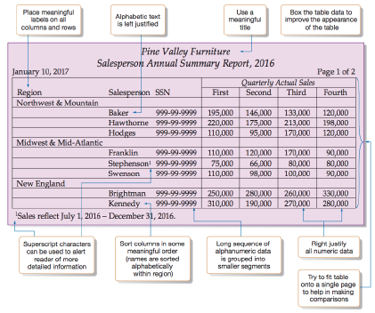
- For displaying data with visuals, use the right type of visual with the data in the report to turn report data into knowledge.
- Use line graph to track changes over a period of time
- Use bar graph when comparing things between different groups or when tracking changes over a period of time
- Use pie chart when comparing different parts of a whole.
- If there is a lot of data to display in a report that requires scrolling, apply filters and make use of hierarchies/drill-downs.
Error Message
- Be as specific and precise as possible. 尽可能精确详细
- Choose user-centred phrasing. State problem, cause, and solution. 向用户表述问题，原因以及解决方案
- Consider multiple levels of messages. 考虑多级消息
- Use a positive tone. Be courteous. Avoid condemnation. 用积极语气，别骂人
- Maintain consistent grammatical forms, terminology, and abbreviations. 用一致的格式术语缩写
- Keep error messages next to fields in forms. 将错误消息保留在表单中的字段旁边
- Use color to differentiate errors from normal field states 用颜色区分
- Add iconography or subtle animation for easy scanning 加icon或动画方便发现
- Maintain consistent visual format and placement. 保持一致的视觉格式和位置
- Use modal dialogs for important warnings to prevent or correct critical errors 使用对话框显示重要警告，以防止或纠正严重错误
- Use modal dialogs only when there is a need to draw extra attention to an error that can lead to some irreparable consequences. 仅当需要特别注意可能导致某些无法弥补的后果的错误时，才使用对话框。
- Modal dialog boxes are disruptive as they disable the main content and do not allow the user to continue interacting with the interface until the dialog box is open, thereby, interrupting the user from completing their task. 模态对话框具有破坏性，因为它们禁用了主要内容，并且在对话框打开之前不允许用户继续与界面进行交互，从而中断了用户完成其任务。
S12 CURRENT TRENDS IN HCI
略